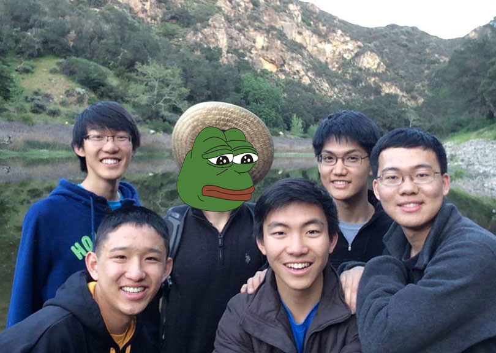

About Us

#instatag was created by 5 UC Berkeley students and one rare pepe. Our mission is to provide a means for users to get the most out of their social media posts. As social media becomes a larger and larger part of everyday life, it becomes increasing more important for both businesses and nonprofits to optimize how they advertise.
#instatag uses image recognition and machine learning to create hashtags that will produce the most likes. More likes means more coverage, and for businesses and nonprofits, that could ultimately improve profits and donations. So while the normal everyday user can use #instatag for their profile, our app has deeper implications with the evolving world of social media.